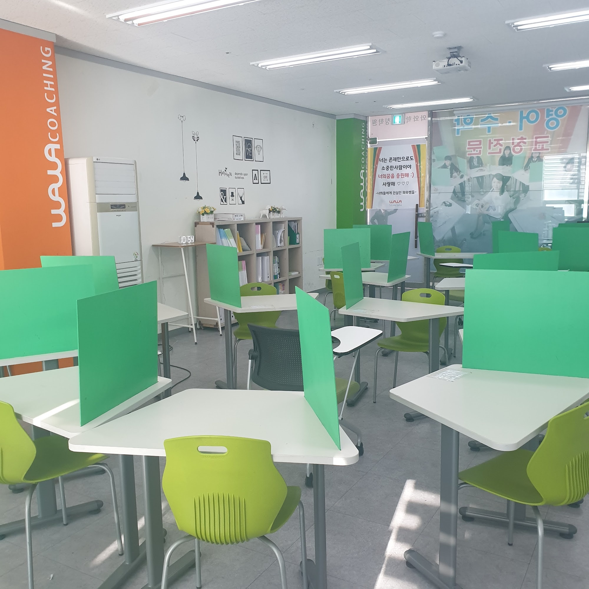
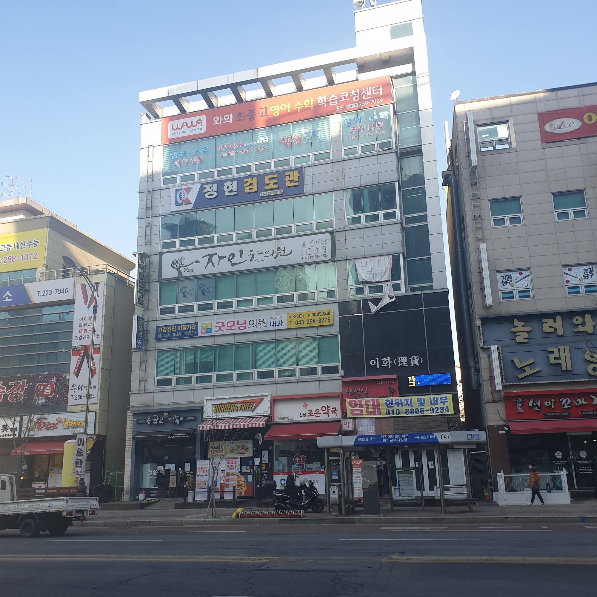

안녕하세요, 충청북도 청주시 서원구 산남동의 와와학습코칭 산남점입니다. 산남로 큰길가에 있는 센터로, 걸어 다닐 만한 거리 안에 충북고등학교(충북고)·운호고등학교(운호고)·충북여자고등학교(충북여고)·산남고등학교(산남고)가 모여 있고 산남중학교(산남중)·수곡중학교(수곡중), 산남초등학교(산남초)·샛별초등학교(샛별초)·남성초등학교·수곡초등학교·한솔초등학교 아이들이 오가는 동네입니다.
오늘은 상담에서 자주 나오는 한 장면으로 시작하겠습니다. 부모님이 이렇게 말씀하십니다. "집에 책상도 있고 방도 조용한데, 왜 굳이 나가서 공부해야 하나요?" 타당한 질문입니다. 그리고 답은 의외로 단순한 데 있습니다.
책상이 없어서 안 되는 게 아닙니다
집 책상이 부족해서 공부가 안 되는 아이는 거의 없습니다. 문제는 그 책상이 하루 종일 여러 가지 용도로 쓰이는 자리라는 데 있습니다.
같은 책상에서 밥도 먹고, 영상도 보고, 친구와 메시지도 주고받고, 그러다 문제집을 폅니다. 아이의 머리는 그 자리를 '공부하는 자리'로 기억하지 않습니다. '무엇이든 해도 되는 자리'로 기억합니다. 그래서 앉자마자 오늘 무엇을 할지 정하는 데 시간이 들고, 조금 지루해지면 늘 하던 다른 일이 자연스럽게 떠오릅니다.
어른도 같습니다. 침대에 누워 서류를 읽으면 잘 안 읽힙니다. 의지 문제가 아니라, 그 자리에 붙은 습관이 이미 다른 것이기 때문입니다.
자습실에 앉는 이유가 여기에 있습니다. 새로운 곳에 가려는 것이 아니라, 다른 용도가 하나도 없는 자리를 하루 중에 확보하려는 것입니다.
칸막이 한 장이 하는 일
위 사진은 산남점 학습실입니다. 책상마다 연두색 칸막이가 한 장씩 세워져 있습니다. 처음 보시면 별것 아닌 판 한 장입니다. 그런데 이 판 한 장이 아이에게 세 가지를 동시에 알려 줍니다.
- 여기서부터가 내 자리다 — 옆자리와 경계가 생기면 아이는 자기 앞의 영역만 정리하면 됩니다. 정리할 범위가 좁아지면 시작이 빨라집니다.
- 옆을 볼 이유가 줄어든다 — 자습실에서 집중을 가장 크게 흔드는 것은 소음이 아니라 옆 사람의 움직임입니다. 누가 일어나고 누가 책을 덮는지가 눈에 들어오면 내 진도가 계속 비교 대상이 됩니다.
- 혼자지만 혼자가 아니다 — 칸막이는 벽이 아닙니다. 고개를 들면 같은 시간에 같은 일을 하고 있는 또래가 보입니다. 완전히 막힌 자리보다 이쪽이 오래 버티는 아이가 많습니다.
가림막은 시야를 좁히는 물건이 아니라 경계를 그려 주는 물건입니다. 중·고등학생에게 필요한 것은 아무도 없는 방이 아니라, 지금 이 시간에 이것만 해도 된다고 정해진 한 뼘입니다.
자습이 공부가 되려면
다만 자리에 앉기만 해서 공부가 되지는 않습니다. 자습실에 세 시간 있었는데 남은 것이 없는 날을 아이들도 압니다. 산남점에서는 자습 시간에 세 가지를 확인합니다.
- 들어올 때 오늘 할 것이 정해져 있는가 — "수학 하기"는 계획이 아닙니다. "○○ 문제집 74~79쪽"이라야 계획입니다. 범위가 없으면 첫 20분이 무엇을 할지 고르는 데 쓰입니다.
- 막혔을 때 물어볼 사람이 있는가 — 모르는 문제 하나 앞에서 40분을 보내는 것이 자습 시간을 가장 많이 잡아먹습니다. 산남점 학습실에는 선생님이 함께 있습니다. 5분 해 보고 안 되면 표시하고 넘어간 뒤, 묶어서 질문하는 순서를 가르칩니다.
- 나갈 때 무엇을 했는지 남는가 — 오늘 푼 범위와 틀린 문제 번호가 기록으로 남아야 다음 날 이어집니다. 남지 않으면 매일 처음부터 다시 시작하게 됩니다.
이 세 가지가 있으면 자습실이고, 없으면 그냥 앉아 있는 방입니다. 관리형 자습이라는 말의 실제 내용이 이 세 가지입니다.
벽에 붙은 문장 하나
학습실 안쪽에는 선생님들이 붙여 둔 세로 배너가 하나 있습니다. 거기에는 이렇게 적혀 있습니다. "너는 존재만으로도 소중한 사람이야. 너의 꿈을 응원해. 사랑해." 아래에 "너희들에게 진심인 와와쌤들"이라고 쓰여 있습니다.
성적 이야기를 하는 글에 이런 문장이 어울리지 않아 보일 수 있습니다. 그런데 자습실을 오래 운영해 보면 이 문장이 왜 붙어 있는지 알게 됩니다.
중·고등학생에게 자습은 대부분 혼자 버티는 시간입니다. 시험이 끝나고 등수가 나오면, 아이는 그날 자기가 쓴 시간 전체를 실패로 계산해 버리기 쉽습니다. 그다음 주에 다시 그 자리에 앉기까지가 가장 어렵습니다.
성적은 오르내립니다. 그 사이에 아이가 자리로 돌아올 수 있느냐가 실제로 결과를 가릅니다. 배너는 그래서 붙어 있습니다. 결과와 상관없이 이 자리는 네 자리라는 말을, 말로 하기 전에 벽이 먼저 해 주는 것입니다.

고등학교가 가까운 동네라는 것
산남점이 있는 건물입니다. 5층 외벽에 "와와 초·중·고 영어·수학 학습코칭센터"라고 걸려 있습니다. 큰길에 면해 있어 학교에서 오는 길에 들르기 쉬운 자리입니다.
산남동은 고등학교가 여러 곳 몰려 있는 동네입니다. 이것이 학부모님께는 두 가지 의미가 됩니다.
하나는 편합니다. 학교가 끝나고 집에 들렀다 다시 나오는 과정 없이 바로 자리에 앉을 수 있습니다. 집에 한 번 들어가면 다시 나오기까지가 오래 걸린다는 것은 모든 고등학생 부모님이 아시는 일입니다.
다른 하나는 조금 다릅니다. 같은 동네 안에서도 학교마다 시험 범위와 출제 방식이 다릅니다. 같은 학년 같은 과목이라도 어느 학교는 서술형 비중이 높고, 어느 학교는 교과서 밖 지문을 많이 냅니다. 한 반에 여러 학교 학생이 섞여 있는 곳에서 "고2 수학"으로만 묶어 진도를 나가면, 정작 시험에 나오는 부분이 어디인지가 흐려집니다.
산남점이 영어·수학을 각자 진도로 보는 이유가 여기에 있습니다. 같은 시간에 같은 방에 앉아 있어도, 아이마다 펴 놓은 범위는 자기 학교 시험 범위여야 합니다.
집에서 오늘부터 해 보실 수 있는 것
- 공부하는 자리를 한 곳으로 정해 주세요 — 넓지 않아도 됩니다. 대신 그 자리에서는 밥도 영상도 하지 않는 것으로 정하십시오. 자리를 바꾸는 것보다 자리의 용도를 하나로 줄이는 것이 효과가 큽니다.
- 앉기 전에 오늘 범위를 쪽수로 적게 하세요 — 세 줄이면 충분합니다. 과목, 쪽수, 걸릴 시간. 적는 데 1분, 아끼는 시간은 20분입니다.
- '모르는 문제 5분 규칙'을 정해 주세요 — 5분 해 보고 안 풀리면 별표 치고 넘어갑니다. 다 푼 뒤에 별표만 모아서 다시 봅니다. 이 규칙 하나로 자습 시간의 밀도가 눈에 띄게 달라집니다.
- 끝난 뒤 '몇 쪽 했어?'만 물어보세요 — 잘했는지 묻지 않아도 됩니다. 숫자만 며칠 쌓이면 아이가 먼저 자기 속도를 알게 됩니다.
산남점 찾아오시는 길
와와학습코칭 산남점은 충청북도 청주시 서원구 산남로 18, 이화빌딩 5층에 있습니다. 충북고등학교·운호고등학교·충북여자고등학교·산남고등학교와 산남중학교·수곡중학교 학생들이 오가기 좋은 큰길가입니다.
학습 진단과 상담은 무료입니다. 오실 때 아이가 지금 쓰고 있는 문제집과 최근 시험지를 함께 가져오시면, 어느 자리에서 시간이 새고 있는지부터 같이 짚어 드릴 수 있습니다.